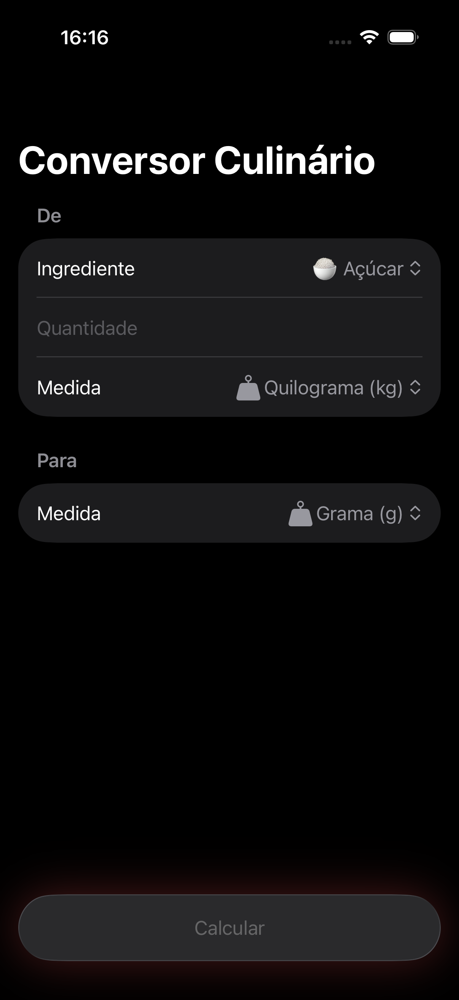
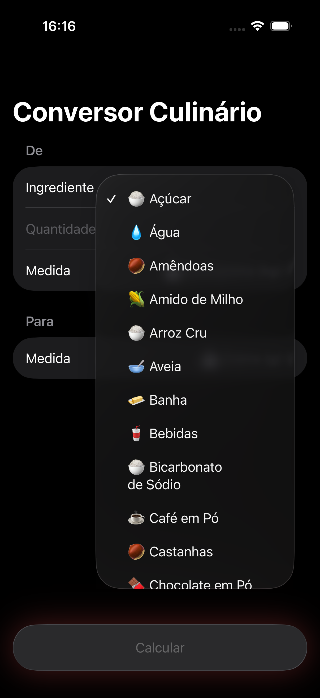
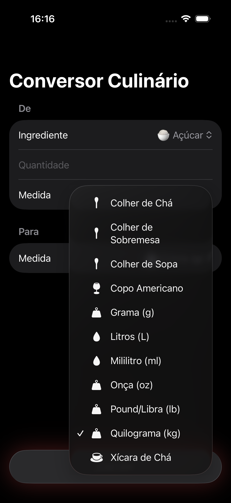
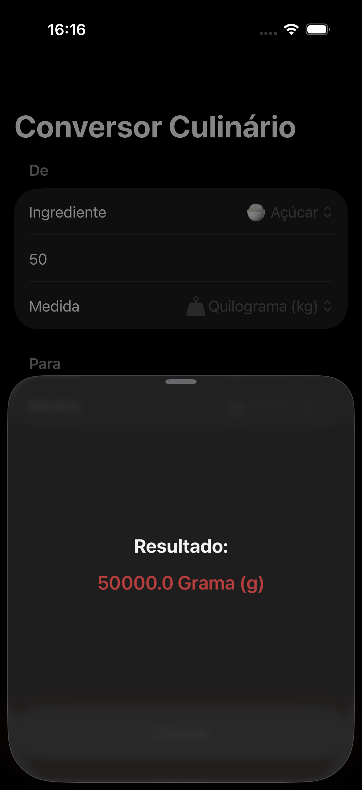

O Conversor Culinário transforma medidas culinárias com precisão — de gramas a xícaras, de quilos a colheres. Mais de 25 ingredientes e 10 unidades de medida.

Simples, rápido e preciso. Sem complicação para converter suas medidas culinárias.
De gramas a xícaras de chá, colher de sopa, colher de chá, onças, libras e muito mais.
Cada ingrediente tem densidade diferente. Açúcar, farinha, manteiga, arroz e muito mais com conversão precisa.
Pressione calcular e veja o resultado na hora. Interface limpa e intuitiva, sem distrações.
Tela principal

Seleção de ingredientes

Resultado

Compatível com iPad
+ muito mais ingredientes dentro do app
10 Unidades disponíveis
Do sistema métrico às medidas culinárias mais usadas no Brasil e no mundo.